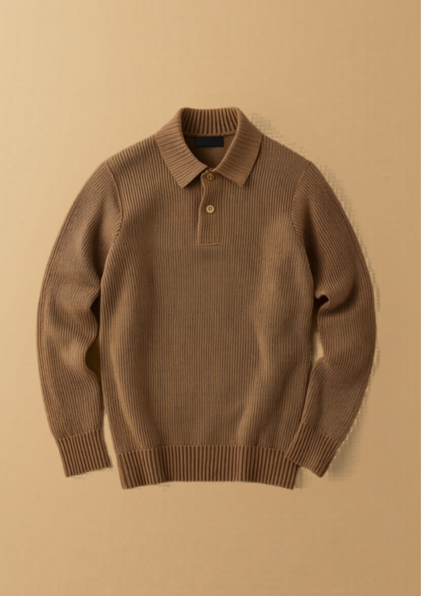

和
東和盛泰株式会社TOUWASEITAI CO., LTD.
PRODUCTION TECH PACK
工場用 製品仕様書
FACTORY / 製造用・全3葉 1/3
01
製品概要・基準写真
PRODUCT & REFERENCE PHOTO

▲ 基準現品写真（色：モカ）。本写真と下記360°図・寸法を相違なきこと。
| カテゴリ | 長袖プルオーバー（ニットポロ衿・2釦プラケット） |
|---|
| 対象 | レディース 30〜40代前半（ユニセックス着用可） |
|---|
| シルエット | レギュラー〜やや長め丈。きれいめ・ヒップが半分隠れる丈。総リブで体型を拾わない。 |
|---|
| 編地 | 身頃・袖＝2×2リブ／衿・前立て＝1×1リブ。全成形（フルファッション）。 |
|---|
| きかせ所 | リブ衿＋2釦プラケットのきちんと感／総リブの縦落ち／抗ピリングで毛玉になりにくい／家庭洗濯機可。 |
|---|
| 想定上代 | ¥2,990（参考。製造原価・度目はカウンターサンプル承認後に確定） |
|---|
02
360°展開図（前・後・側）
360° TECHNICAL FLATS ・ FRONT / BACK / SIDE
※ 側面はセットイン袖・脇直線（破線＝脇接ぎ位置）。袖は前振りなし。肩はリンキング接ぎ、見返し・台衿なし。
03
パーツ展開図（編立パネル）
PANEL DEVELOPMENT ・ KNIT PARTS
※ 全パーツ横編全成形（カットロスなし）。接ぎ＝肩:リンキング／脇・袖下:オーバーロック＋本縫い／衿・前立て:リンキング付け。
和
東和盛泰株式会社TOUWASEITAI CO., LTD.
MEASUREMENT SPEC
寸法・POM
FACTORY / 製造用・全3葉 2/3
04
採寸ポイント図（POM）
POINTS OF MEASURE ・ 平置き
| 記号 | 採寸箇所 | 採寸方法 |
|---|
| A | 着丈 | HPS（肩高点）→裾端 |
| B | 身幅 | 脇下2.5cm下を直線 |
| C | 肩幅 | 肩先→肩先 直線 |
| D | 袖丈 | 肩先→袖口端 |
| E | 袖幅 | アームホール下を直線 |
| F | 袖口幅 | 袖口リブ端を直線 |
| G | アームホール | 肩先→脇下 直線 |
| H | 衿ぐり幅 | 衿付け内寸 左右 |
| I | 前衿ぐり深さ | HPS水平線→前衿底（前立含） |
| J | 後衿ぐり深さ | HPS水平線→後衿底 |
| K | 衿高 | 衿付け→衿端（折前） |
| L | 前立て長 | 衿付け→前立て下端 |
| M | 裾リブ高 | 裾端→リブ切替 |
| N | 袖口リブ高 | 袖口端→リブ切替 |
| O | 裾幅 | 裾端を直線 |
05
寸法表・グレーディング
SIZE SPEC & GRADING ・ 単位 cm
| 記号 | 採寸箇所 | S | M | L | XL | XXL | 許容差± | ピッチ |
|---|
| A | 着丈 | 63 | 65 | 67 | 69 | 71 | 1.5 | +2.0 |
|---|
| B | 身幅 | 46 | 49 | 52 | 55 | 58 | 2.0 | +3.0 |
|---|
| C | 肩幅 | 37 | 39 | 41 | 43 | 45 | 1.0 | +2.0 |
|---|
| D | 袖丈 | 58 | 59 | 60 | 61 | 62 | 1.5 | +1.0 |
|---|
| E | 袖幅 | 18 | 19 | 20 | 21 | 22 | 1.0 | +1.0 |
|---|
| F | 袖口幅 | 8.0 | 8.5 | 9.0 | 9.5 | 10.0 | 0.5 | +0.5 |
|---|
| G | アームホール | 18 | 19 | 20 | 21 | 22 | 1.0 | +1.0 |
|---|
| H | 衿ぐり幅 | 18.0 | 18.5 | 19.0 | 19.5 | 20.0 | 0.7 | +0.5 |
|---|
| I | 前衿ぐり深さ | 11.0 | 11.5 | 12.0 | 12.5 | 13.0 | 0.7 | +0.5 |
|---|
| J | 後衿ぐり深さ | 2.0 | 2.0 | 2.5 | 2.5 | 3.0 | 0.5 | ± |
|---|
| K | 衿高（折前） | 7.0 | 7.0 | 7.0 | 7.0 | 7.0 | 0.5 | ± |
|---|
| L | 前立て長 | 12.0 | 12.0 | 12.5 | 12.5 | 13.0 | 0.5 | +0.3 |
|---|
| M | 裾リブ高 | 5.0 | 5.0 | 5.0 | 5.0 | 5.0 | 0.5 | ± |
|---|
| N | 袖口リブ高 | 3.5 | 3.5 | 3.5 | 3.5 | 3.5 | 0.5 | ± |
|---|
| O | 裾幅 | 46 | 49 | 52 | 55 | 58 | 2.0 | +3.0 |
|---|
※ 採寸は平置き・自然状態（リブを伸ばさない）。度目（編密度）で寸法調整。基準＝M。検反時は各サイズ抜取りで全POM実測し許容差内を確認。
06
編密度・度目指示
KNITTING DENSITY
| ゲージ | 7GG 横編（全成形） | 基準度目 | 10cm角：ヨコ約24目 × タテ約32段（2×2リブ・自然状態） |
|---|
| 糸長(度目値) | カウンターサンプル時に実測・記録し量産固定 | 衿・前立て | 1×1リブ・身頃より度目やや詰め（伸び止め） |
|---|
| 成形 | 前後身頃・袖とも増減目で全成形（フルファッションマーク露出可）。カットせず編立形状で寸法を出す。 |
|---|
07
カラー展開・色番
COLORWAY ・ 釦色合わせ
| No. | カラー名 | 色番 | PANTONE TPX | 釦色 | 備考 |
|---|
| 1 | オフホワイト | OFW | 11-0107 | 共布色 | 定番・最量産色（現品基準） |
| 2 | モカ | MOC | 16-1235 | 共布色 | ★基準写真の色 |
| 3 | ブラウン | BRN | 19-1217 | 共布色 | 大人世代の定番 |
| 4 | ボルドー | BDX | 19-1521 | 共布色 | A/W差し色 |
| 5 | イエロー | YEL | 14-0952 | 共布色 | 展示映え・アクセント |
※ 色番・PANTONEは参考。確定はラボディップ（編地色見本）承認による。釦は各色とも共布くるみ釦で本体色に合わせる。
和
東和盛泰株式会社TOUWASEITAI CO., LTD.
CONSTRUCTION & QC
素材・縫製・検品
FACTORY / 製造用・全3葉 3/3
08
素材・付属（BOM）
BILL OF MATERIALS
| 本体糸 | アクリル60% / ナイロン30% / 毛8% / ポリウレタン2%（抗ピリング糸） | 番手/本数 | 2/48 × 2本引揃え（約1/12Nm） |
|---|
| 釦 | 共布くるみ釦 φ13mm × 2個（＋予備1個） | 縫製糸 | ウーリーナイロン／スパン#60 本縫い（色番:本体色合わせ） |
|---|
| 織ネーム | ブランド織ネーム（縦型）後ろ衿中央付け | 品質表示 | サテン／組成・原産国・洗濯絵表示・整理番号 |
|---|
| 下げ札 | 主札＋品番札（右袖・ガンタッカ） | 個包装 | OPP袋＋台紙／予備釦は品質表示タグに添付 |
|---|
09
ディテール拡大・縫製指示
DETAIL CALLOUTS
衿 / COLLAR
1×1リブ衿・折返し。台衿なし。衿高7cm（折前）。リンキング付け・衿付けは伸び止め度目。
前立て / PLACKET
2釦・釦間約3.4cm。前立幅2.5cm・上前/下前重ね。釦ホール＝リンキングループ。釦付け強度10N以上。
袖口 / CUFF
2×2リブ袖口・リブ高3.5cm。袖下＝オーバーロック＋本縫い。前振りなし。
裾 / HEM
2×2リブ裾・リブ高5cm。脇＝オーバーロック＋本縫い。脇裾は閂(かんぬき)補強。
10
縫製・接ぎ仕様
CONSTRUCTION
| 肩接ぎ | リンキング（目移し接ぎ・地縫い併用可） | 脇・袖下 | 4本針オーバーロック＋本縫い（伸び対応） |
|---|
| 袖付け | セットイン縫製（イセ込み少・左右対称） | 衿・前立て付け | リンキング（衿ぐりに伸び止め） |
|---|
| 縫目密度 | 本縫い 3.0mm/針（約8.5針/インチ） | 仕上げ | ソフト仕上げ（過度な圧縮プレス不可）・整形セット |
|---|
11
洗濯表示・梱包
CARE & PACKING
| 洗濯表示 | 液温40℃・洗濯機弱 ／ 漂白不可 ／ タンブラー乾燥不可 ／ アイロン中温（あて布）／ 日陰の平干し ※裏返し・ネット使用推奨 |
|---|
| たたみ | 三つ折り（台紙入り） | 個包装 | OPP個包装・シール留め |
|---|
| 入数 | 1色1サイズ 20枚／カートン | アソート | カラー5 × サイズ5（指示書による） |
|---|
12
検品基準・合否
QUALITY CONTROL
- 寸法：全POMを上記許容差内。基準サイズMは±0方向で管理。左右対称必須。
- 編立：度目不揃い・編キズ・目飛び・穴・色段（編段）は不良。フルファッションマークの位置は左右対称。
- 抗ピリング：JIS L 1076（ICI法）3-4級以上を目標。
- 洗濯収縮：タテ・ヨコとも ±3%以内（JIS L 1909相当）。
- 染色堅牢度：摩擦・洗濯ともに4級以上を目標（濃色は別途確認）。
- 釦：取付強度10N以上。予備釦添付を確認。糸切れ・ほつれなきこと。
- 付属・表示：織ネーム/品質表示の位置・内容・整理番号を現品照合。
- 外観：汚れ・油染み・異物混入・異臭なきこと。検針（金属探知）通過。
- ※本仕様書は提案兼製造指示。寸法・度目・原価は参考値を含み、量産確定はカウンターサンプル承認後とする。